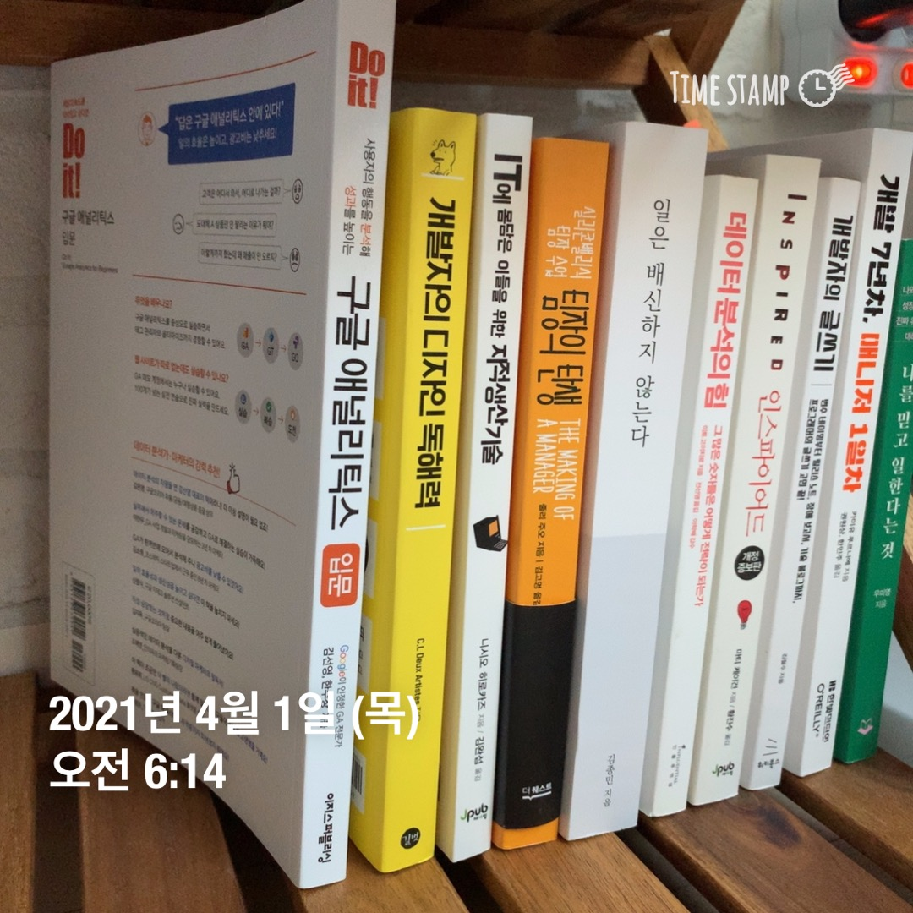

<div class="dimmed-layer" onclick="modalClose()"></div>

<div class="modal-container">
  <svg aria-label="닫기" onclick="modalClose()" class="btn-close " fill="#000" height="24" viewBox="0 0 48 48" width="24"><path clip-rule="evenodd" d="M41.8 9.8L27.5 24l14.2 14.2c.6.6.6 1.5 0 2.1l-1.4 1.4c-.6.6-1.5.6-2.1 0L24 27.5 9.8 41.8c-.6.6-1.5.6-2.1 0l-1.4-1.4c-.6-.6-.6-1.5 0-2.1L20.5 24 6.2 9.8c-.6-.6-.6-1.5 0-2.1l1.4-1.4c.6-.6 1.5-.6 2.1 0L24 20.5 38.3 6.2c.6-.6 1.5-.6 2.1 0l1.4 1.4c.6.6.6 1.6 0 2.2z" fill-rule="evenodd"></path></svg>
  <div class="modal-content">
    <div class="feed-item">
      <div class="feed-header">
        <a href="../../docs/page/view-thumb.html" class="flx-ac">잔망루피</a>
      </div>
      <div class="feed-body">
        
        <div class="feed-like">
          <button class="btn-like is-active">응원해요</button>
          <span class="like-count">7명이 응원해요</span>
        </div>
        <p class="feed-txt">미라클모닝에는 역시 독서가 빠질 수 없지📚&nbsp;<a class="tag" href="../../docs/page/search.html">#BOOK</a></p>
        <p class="feed-date">2021. 4. 1.</p>
      </div>
      <div class="feed-footer">
        <!-- <div class="comment-area">
          <ul class="comment-list">
            <li class="comment-item"><b>유저네임</b><span>댓글</span></li>
          </ul>
        </div> -->
        <div class="comment-form">
          <input class="comment-input" type="text" placeholder="댓글을 입력하세요.">
          <button class="btn-comment color-primary" disabled>게시</button>
        </div>
      </div>
    </div>
  </div>
</div>

<script>
  function modalClose(){
    $('.view-modal-area').addClass('hidden');
  }
</script>